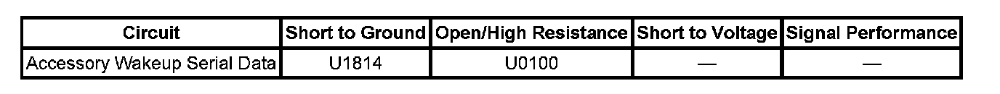

U1814
DTC U1814
DTC DESCRIPTOR
DTC U1814 00
Powertrain High Speed Communication Enable Circuit
DIAGNOSTIC FAULT INFORMATION

Perform the Diagnostic System Check - Vehicle prior to using this diagnostic procedure Initial Inspection and Diagnostic Overview.
CIRCUIT/SYSTEM DESCRIPTION
The accessory wakeup serial data circuit is a positive voltage signal to wake up the engine control module (ECM) and the transmission control module (TCM). The signal is activated in 2 ways; any time the ignition switch is in the ACC or RUN position, or anytime the body control module (BCM) determines that communication is needed from the powertrain. When the ignition switch is in the ACC or RUN position, the accessory voltage circuit input to the BCM is internally connected to the accessory wakeup serial data circuit output, and voltage is supplied to the modules. The BCM also supplies voltage to the accessory wakeup serial data circuit when it determines that communication is necessary with the powertrain and the ignition is not in the ACC or RUN position such as during remote start.
CONDITIONS FOR RUNNING THE DTC
- The system voltage is between 9-16 volts.
- The vehicle power mode master requires serial data communication to occur.
CONDITIONS FOR SETTING THE DTC
The BCM senses a short to ground on the accessory wakeup serial data circuit.
ACTION TAKEN WHEN THE DTC SETS
- The modules use a default value for the missing parameters until the next ignition cycle.
- The module(s) is never signaled, therefore the specific subsystem(s) will not function.
- The vehicle may not start.
CONDITIONS FOR CLEARING THE DTC
- A current DTC clears when the malfunction is no longer present.
- A history DTC clears when the module ignition cycle counter reaches the reset threshold of 50, without a repeat of the malfunction.
DIAGNOSTIC AIDS
- Use the DMM MIN/MAX function to capture/locate intermittent conditions.
- Short to ground may also set multiple no communication codes for GMLAN high speed modules.
CIRCUIT/SYSTEM TESTING
1. With the ignition OFF, disconnect the harness connector at the ECM and TCM one at a time. After each disconnect, retest for current DTCs. DTC U1814 should remain current.
- If the DTC becomes history, replace the module disconnected before the DTC became history.
2. Ignition OFF, disconnect the harness connector at the BCM.
3. Test for infinite resistance between the accessory wakeup serial data circuit and ground.
- If less than infinite resistance, repair the serial data circuit for a short to ground.
4. If all tests normal, replace the BCM.
REPAIR INSTRUCTIONS
Perform the Diagnostic Repair Verification after completing the diagnostic procedure. Verification Tests
Control Module References for module replacement, setup, and programming. Programming and Relearning